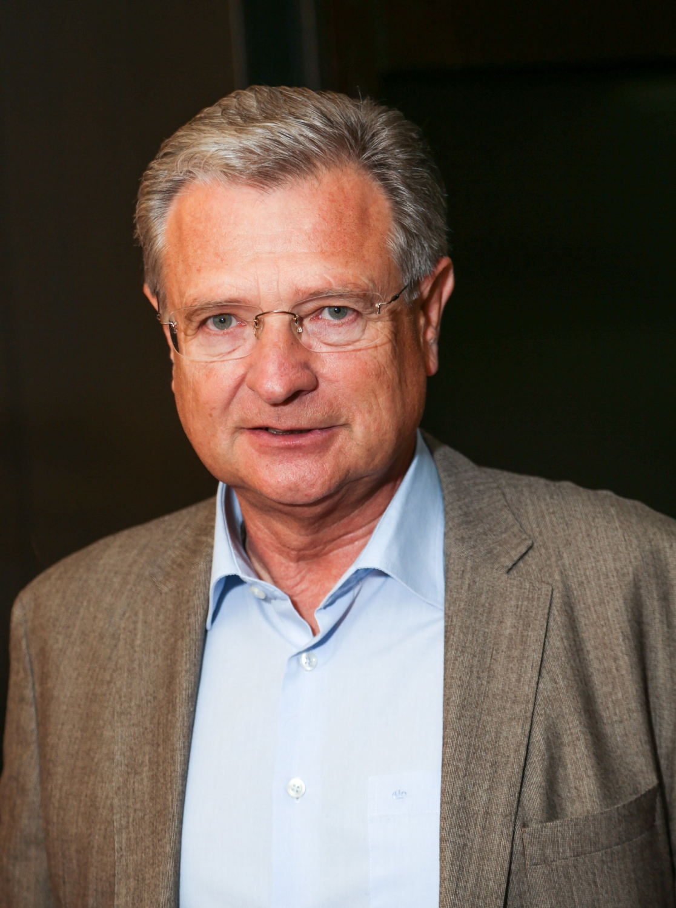
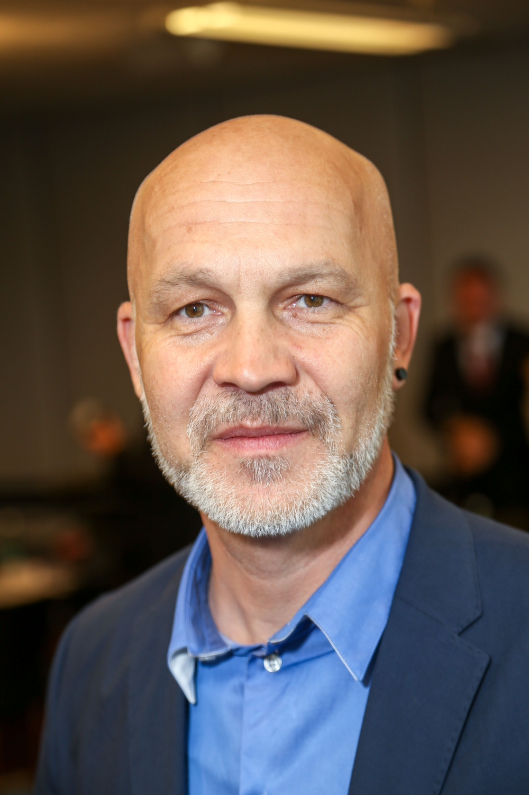
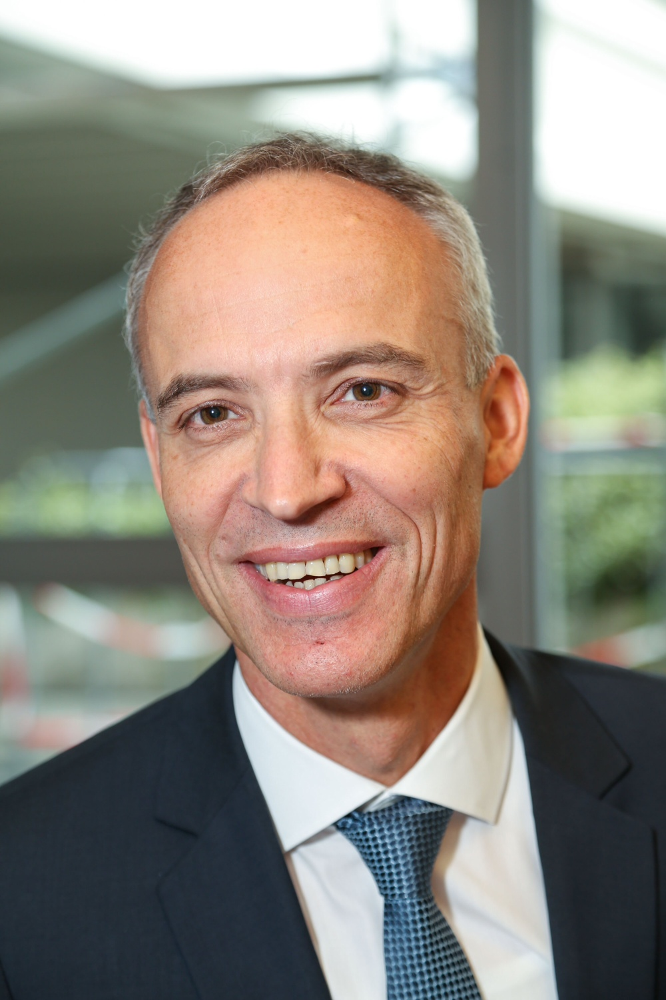
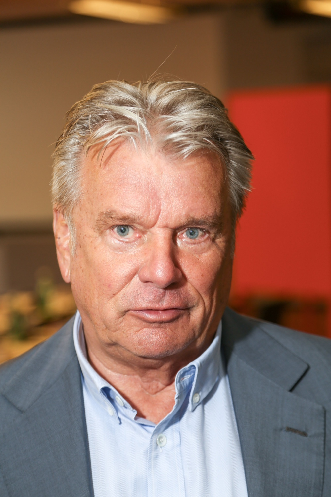
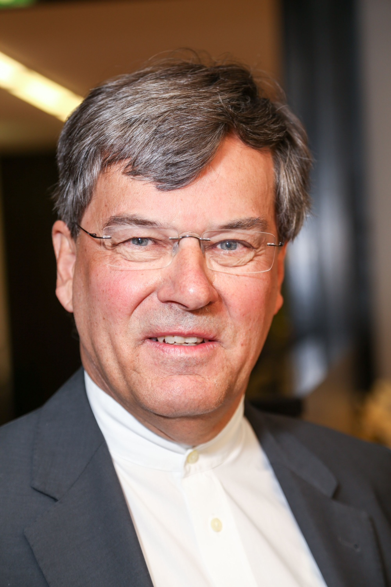
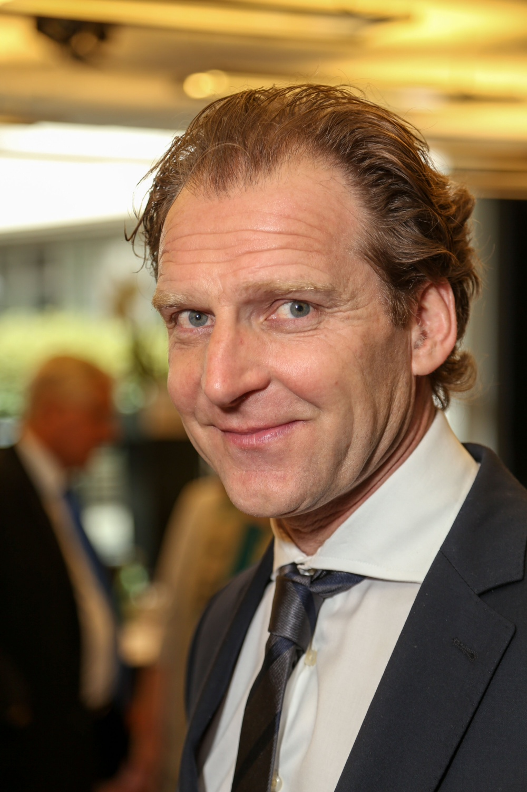
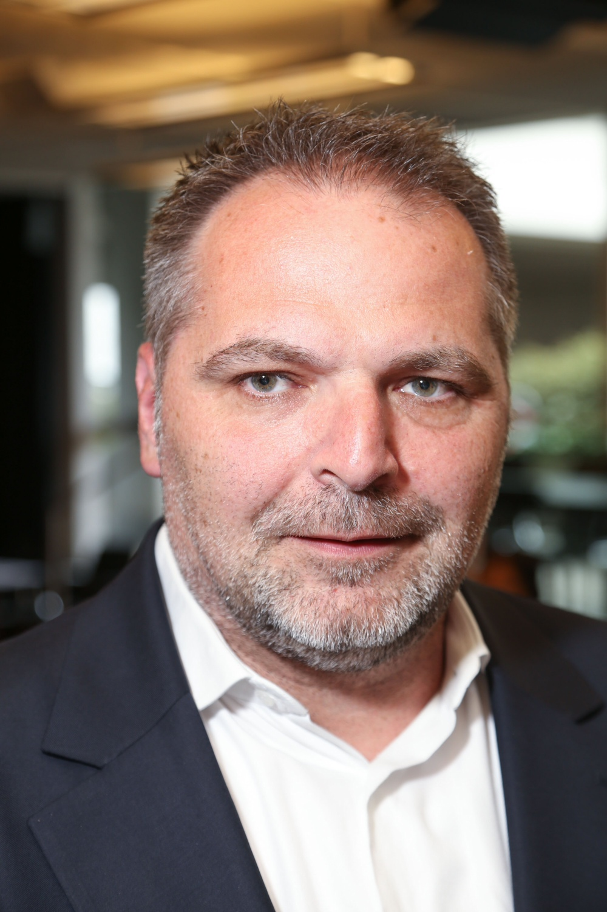
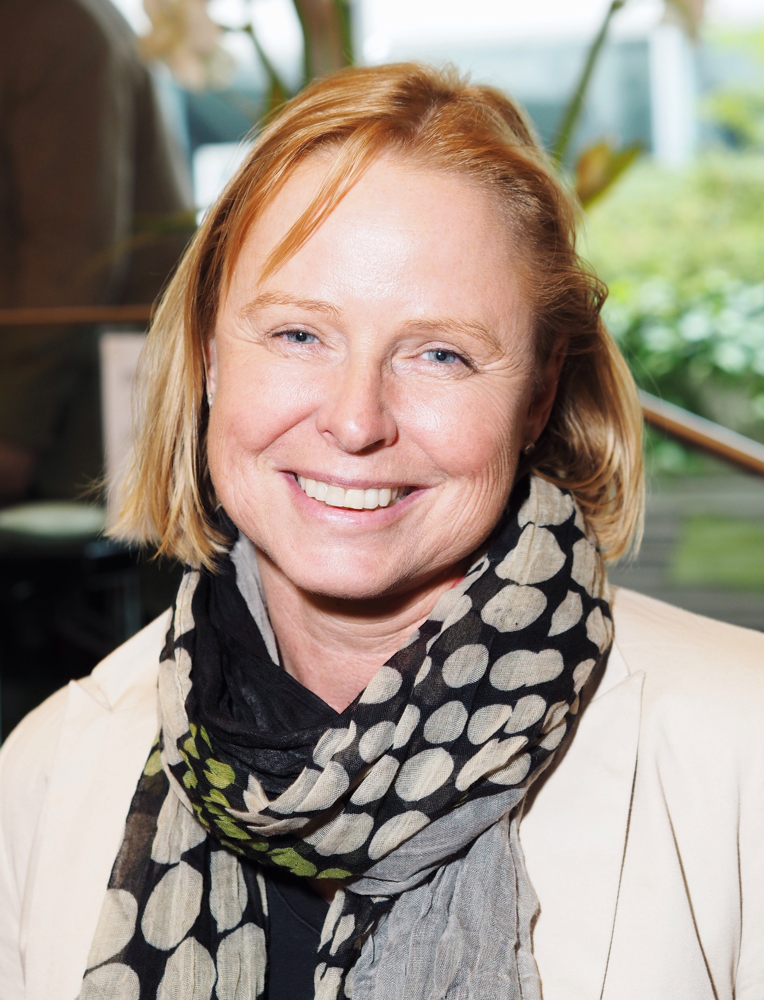
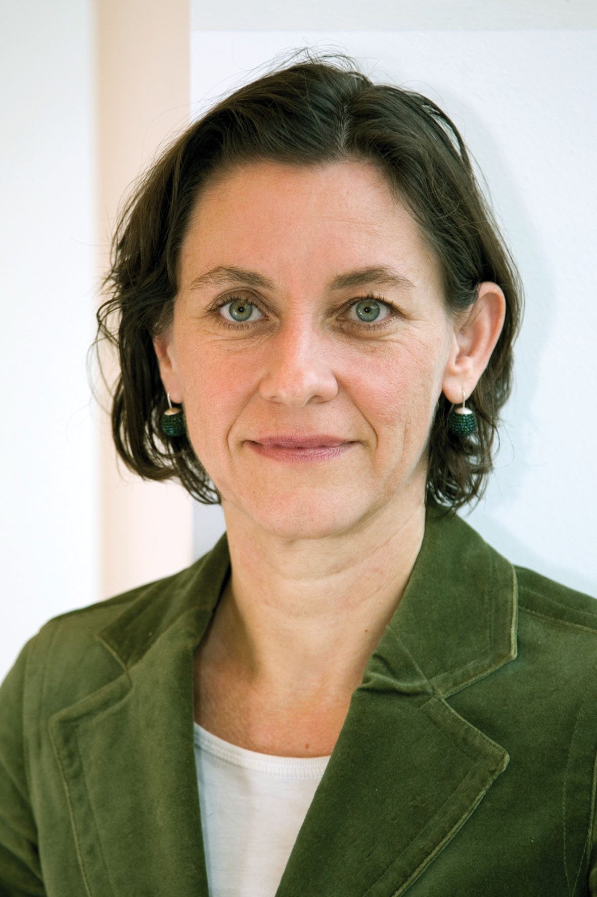

8 Frauen, 27 Männer
Von den 35 Mitgliedern des Stiftungsrates sind rund ein Fünftel Frauen.
8 Frauen
- 5 von der SPÖ
- 2 von der ÖVP,
- 1 ist unabhängig.
27 Männer
- 9 von der SPÖ
- 11 von der ÖVP
- 2 von der FPÖ.
- je 1 von der Grüne, Neos und Team Stronach.
- 2 sind unabhängig.
Für mehr Info Mauszeiger über die Grafik bewegen oder auf eines der Segmente klicken.
Person auswählen
Mit der Maus über die Kreissegmente fahren
Der Name der Person erscheint im mouse-over
Mit einem Klick erscheint die Information in der Infobox
Gerhard Berti

ORF-Technik
Andrea Brem
 Geschäftsführerin der Wiener Frauenhäuser, das sind Einrichtungen der Gemeinde Wien. Vorsitzende des Trägervereins ist die SPÖ-Gemeinderätin Martina Ludwig-Faymann, Ehefrau des Bundeskanzlers.
Geschäftsführerin der Wiener Frauenhäuser, das sind Einrichtungen der Gemeinde Wien. Vorsitzende des Trägervereins ist die SPÖ-Gemeinderätin Martina Ludwig-Faymann, Ehefrau des Bundeskanzlers.
Wilfried Embacher
 Partner einer Rechtsanwaltskanzlei in Wien, die sich auf Menschenrechtsfälle (also Asyl- und Fremdenrecht) spezialisiert hat und auch mit entsprechenden NGOs zusammenarbeitet.
Partner einer Rechtsanwaltskanzlei in Wien, die sich auf Menschenrechtsfälle (also Asyl- und Fremdenrecht) spezialisiert hat und auch mit entsprechenden NGOs zusammenarbeitet.
Rudolf Ertl
 Ehemaliger Vorstandsdirektor der Wiener Städtischen Versicherung / Vienna Insurance Group, deren Hauptaktionär mit 70 Prozent der Wiener Städtische Versicherungsverein im Einflussbereich der SPÖ-dominierten Gemeinde Wien ist.
Ehemaliger Vorstandsdirektor der Wiener Städtischen Versicherung / Vienna Insurance Group, deren Hauptaktionär mit 70 Prozent der Wiener Städtische Versicherungsverein im Einflussbereich der SPÖ-dominierten Gemeinde Wien ist.
Herbert Fechter
Inhaber einer großen Entertainment-Agentur, vermittelt Künstler und Prominente – auch an den ORF, organisiert Großkonzerte, macht TV- und Videoproduktionen. Die Geschäftsführung der Fechter Management gibt er an seine Frau ab, um Unvereinbarkeitsvorwürfen zu begegnen.
Fechter hat auch beste Kontakte zu ÖVP-Außenminister Sebastian Kurz.
Erich Fenninger
Bundesgeschäftsführer der Volkshilfe Österreich seit 2003.
Ausbildung als Hochbautechniker, danach Studium an der Sozialakademie, Arbeit als Sozialarbeiter und Sozialmanager.
Vertritt Menschen mit Behinderung im ORF-Publikumsrat.
Alfred Geismayr
Jurist und Betriebswirt, Partner und Geschäftsführer der Wirtschaftsprüfungs- und Steuerberatungskanzlei PricewaterhouseCoopers in Dornbirn.
Seit 2013 ist er zudem Aufsichtsratsvorsitzender der Vorarlberger Landes- und Hypothekenbank, ab 1. Mai 2014 stv. Vorsitzender.
Karin Gutierrez-Lobos
Leiterin SPÖ-Freundeskreis
Fachärztin für Psychiatrie und Neurologie, Schwerpunkte Sozialpsychiatrie, forensische Psychiatrie, geschlechtsspezifische Aspekte psychiatrischer Störungen.
Mitglied der Bioethikkommission des Bundeskanzleramts, des Wiener Beirats für Frauengesundheit.
Seit 2007 Vizerektorin für Personalentwicklung und Frauenförderung an der Medizinischen Universität Wien.
Hans Peter Haselsteiner
Bauunternehmer, Gründer des STRABAG-Konzerns, Miteigentümer des ÖBB-Konkurrenten WESTbahn.
Von 1994 bis 1998 für das Liberale Forum Abgeordneter zum Nationalrat, finanzierte 2008 beim neuerlichen Antreten von Heide Schmidt deren Nationalratswahlkampf und unterstützte im Wahlkampf 2013 die NEOS finanziell und als Ministerkandidat.
Margit Hauft
 Präsidentin der Katholischen Aktion in Oberösterreich und Vorsitzende der Katholischen Frauenbewegung Österreich.
Präsidentin der Katholischen Aktion in Oberösterreich und Vorsitzende der Katholischen Frauenbewegung Österreich.
Seit 12 Jahren für das Land OÖ im Stiftungsrat
Dietmar Hoscher
 Vorsitzender Stiftungsrat
Vorsitzender Stiftungsrat
Begann als SPÖ-Klubsekretär im Parlament und war von 1995 bis 1998 Ministersekretär im Bundesministerium für Finanzen unter den SPÖ-Ministern Andreas Staribacher und Viktor Klima.
Das BMF ist gemäß Glücksspielgesetz für die Aufsicht und die Vergabe von Konzessionen zuständig. Hoscher ist seit 1998 im Management der Casinos Austria tätig, die indirekt zu 33 Prozent der Nationalbank gehören, derzeit als Vorstandsdirektor.
Hoscher war von 1999 bis 2002 für die SPÖ im Bundesrat, von 2002 bis 2006 im Nationalrat.
Seit Jahren ist der eingefleischte Rapidler Hoscher auch Vorsitzender des Kuratoriums der Grün-Weißen.
Herwig Hösele
Kommt aus der Steirischen Volkspartei, war von 1980 bis 2005 enger Mitarbeiter und Berater der ÖVP-Landeshauptleute Josef Krainer und Waltraud Klasnic.
Von 2000 bis 2005 von der ÖVP in den Bundesrat entsandt, im ersten Halbjahr 2003 dessen Präsident. Mitinitiator des österreich-Konvents zur Verfassungsreform.
Seit 2011 Geschäftsführer des Zukunftsfonds der Republik.
Christiana Jankovics

ORF-Fernsehen
Stefan Jung

ORF-Magazine
Norbert Kettner
 Chef Wien-Tourismus.
Chef Wien-Tourismus.
Ursprünglich Journalist, ab 1993 Pressereferent des SPÖ-Kommunalpolitikers Sepp Rieder - zunächst in dessen Funktion als Gesundheitsstadtrat, ab 1999 als Wirtschafts- und Finanzstadtrat in Wien.
Im September 2003 wechselte Kettner den Job und baute für die Stadt eine Kreativ-Förderagentur auf. Im Rahmen dessen wurden mehrere Projekte mit Wien-Tourismus umgesetzt.
Alberich Klinger
 Gründer und langjähriger Leiter der Nö Landesakademie i.R.,
Gründer und langjähriger Leiter der Nö Landesakademie i.R.,
enger Vertrauter von LH Erwin Pröll
Franz Küberl
 Langjähriger Präsident der Caritas Österreich (1995 bis 2013).
Langjähriger Präsident der Caritas Österreich (1995 bis 2013).
Mitglied des ORF-Publikumsrats und des ORF-Stiftungsrats sowie einer der Stifter der Privatstiftung Katholischer Medien Verein. Diese ist Eigentümerin der Styria Media Group, zu der unter anderem die Kleine Zeitung und Die Presse gehören.
Brigitte Kulovits-Rupp
 Leiterin Kommunikation und Marketing der AK Burgenland
Leiterin Kommunikation und Marketing der AK Burgenland
Seit 1988 in der AK, zuvor Mitarbeiterin ORF Landesstudio Burgenland.
Seit 2001 Mitglied Stiftungsrat, von 2002 bis 2014 Vorsitzende Programmausschuss, 2010 bis 2014 Vorsitzende Stiftungsrat
Günter Leitold
Banker bei der Capital Bank, die zum Konzern der Grazer Wechselseitigen Versicherung (GRAWE Gruppe) gehört.
In der Bank arbeitet auch der Lebensgefährte von Team-Stronach-Parteichefin und Klubobfrau Kathrin Nachbaur.
Matthias Limbeck
 Geschäftsführer von Reed Exhibitions Messe, lebt in Partnerschaft mit der Klubvorsitzenden der ÖVP im Salzburger Landtag, Gerlinde Rogatsch.
Geschäftsführer von Reed Exhibitions Messe, lebt in Partnerschaft mit der Klubvorsitzenden der ÖVP im Salzburger Landtag, Gerlinde Rogatsch.
War von 2001 bis 2005 und seit November 2013 Mitglied des Stiftungsrates.
Walter Marschitz
Geschäftsführer Hilfswerk Österreich seit 2001.
Zuvor Chef der ÖVP-nahen Aktionsgemeinschaft und öH-Vorsitzender, Mitarbeiter im ÖVP-Generalsekretariat und Geschäftsführer der Julius-Raab-Stiftung.
Franz Medwenitsch
 Stellvertretender Vorsitzender Stiftungsrat
Stellvertretender Vorsitzender Stiftungsrat
Vorsitzender Programmauschuss
Jus-Studium, dann Bankausbildung, später Mitarbeiter beim ORF.
Seit 1993 Geschäftsführer des Verbandes der österreichischen Musikwirtschaft und zweier Verwertungsgesellschaften.
Willi Mernyi
Gelernter Starkstrommonteur, dann Kulturmanager im zweiten Bildungsweg.
Seit 1993 zunächst als Bundessekretär der Österreichischen Gewerkschaftsjugend hauptberuflich im ÖGB tätig. Leitete viele Jahre das Kampagnenreferat und ist derzeit Leiter des ÖGB-Referates für Organisation, Koordination und Service. Ehrenamtlicher Vorsitzender des Mauthausen Komitees Österreich.
Seit vielen Jahren ÖGB-Vertreter im ORF-Publikumsrat.
Siegfried Meryn
 Facharzt und Professor für Innere Medizin. Vorstand des Institutes Besondere Einrichtung für Medizinische Aus- und Weiterbildung der Medizinischen Universität Wien.
Facharzt und Professor für Innere Medizin. Vorstand des Institutes Besondere Einrichtung für Medizinische Aus- und Weiterbildung der Medizinischen Universität Wien.
Autor von über 200 wissenschaftlichen Publikationen in Fachzeitschriften und Fachbüchern, darunter Bestseller in Kooperation mit dem ORF, dem er auch als Gesundheitsexperte im TV zur Verfügung stand.
Gerhard Moser

ORF-Ö1
Siggi Neuschitzer
 Betreibt Babyhotel bei Spittal an der Drau, befreundet mit dem früheren FPK-Landeshauptmann Gerhard Dörfler, der ihn 2009 zum Stiftungsrat gemacht hat. SPÖ-Landeshauptmann Peter Kaiser hat Neuschitzer jetzt wieder nominiert.
Betreibt Babyhotel bei Spittal an der Drau, befreundet mit dem früheren FPK-Landeshauptmann Gerhard Dörfler, der ihn 2009 zum Stiftungsrat gemacht hat. SPÖ-Landeshauptmann Peter Kaiser hat Neuschitzer jetzt wieder nominiert.
Josef Resch
 Kulturmanager, seit 2011 für Tirol im Stiftungsrat.
Kulturmanager, seit 2011 für Tirol im Stiftungsrat.
Seit 1980 als selbstständiger Kulturvermittler und Veranstalter tätig, 1995 gründete er den Tanzsommer Innsbruck, 2006 den Operettensommer. Bei beiden Festivals Geschäftsführer.
Rainer Rösslhuber
 Von 2000 bis 2007 Mitarbeiter des Salzburger ÖVP-Landeshauptmanns Franz Schausberger und danach von ÖVP-Landeshauptmann-Stellvertreter Wilfried Haslauer.
Von 2000 bis 2007 Mitarbeiter des Salzburger ÖVP-Landeshauptmanns Franz Schausberger und danach von ÖVP-Landeshauptmann-Stellvertreter Wilfried Haslauer.
2007 Wechsel als Generalsekretär der Sportunion nach Wien. Seit 2011 im ORF-Stiftungsrat.
Andrea Schellner
 Wirtschaftsprüferin und Steuerberaterin in der Kanzlei HFP, die zum SPÖ-nahen Wirtschaftstreuhänder Günther Havranek gehört. Und Havranek ist über zwei Stiftungen Mehrheitseigentümer der Gratiszeitung HEUTE, deren Geschäftsführer Wolfgang Jansky langjähriger Pressesprecher von Bundeskanzler Werner Faymann war, als dieser noch in der Wiener Kommunalpolitik wirkte.
Wirtschaftsprüferin und Steuerberaterin in der Kanzlei HFP, die zum SPÖ-nahen Wirtschaftstreuhänder Günther Havranek gehört. Und Havranek ist über zwei Stiftungen Mehrheitseigentümer der Gratiszeitung HEUTE, deren Geschäftsführer Wolfgang Jansky langjähriger Pressesprecher von Bundeskanzler Werner Faymann war, als dieser noch in der Wiener Kommunalpolitik wirkte.
Norbert Steger
 Ehemaliger FPÖ-Parteiobmann und Handelsminister von 1983 bis 1986, hat sich nach dem Sturz als Parteiobmann durch Jörg Haider auf seine Tätigkeit als Rechtsanwalt zurückgezogen. Unter der Führung von Heinz Christian Strache wieder Aussöhnung mit der Partei, für die er seit 2010 im ORF-Stiftungsrat sitzt.
Ehemaliger FPÖ-Parteiobmann und Handelsminister von 1983 bis 1986, hat sich nach dem Sturz als Parteiobmann durch Jörg Haider auf seine Tätigkeit als Rechtsanwalt zurückgezogen. Unter der Führung von Heinz Christian Strache wieder Aussöhnung mit der Partei, für die er seit 2010 im ORF-Stiftungsrat sitzt.
Petra Stolba
Geschäftsführerin der Österreich Werbung seit 2006.
Zuvor Abteilungsleiterin für nationale Tourismuspolitik im Bundesministerium für Wirtschaft und Arbeit und Geschäftsführerin der Bundessparte Tourismus und Freizeitwirtschaft der Wirtschaftskammer.
Alois Sundl
 Langjähriger Generaldirektor der Merkur-Versicherung, 2013 ausgeschieden.
Langjähriger Generaldirektor der Merkur-Versicherung, 2013 ausgeschieden.
Vertrauter von SPÖ-Landeshauptmann Franz Voves, der vor seiner politischen Karriere zwischen 1989 und 2002 selbst Merkur-Vorstandsmitglied war, zuständig für den Finanzbereich – und Sundl aus dieser Zeit kennt.
Thomas Zach
 Vorsitzender Finanzausschuss
Vorsitzender Finanzausschuss
Leiter ÖVP-Freundeskreis
War unter anderem Büroleiter von ÖVP-Innenministers Ernst Strasser in der ÖVP-FPÖ-Koalition und wechselte 2003 in die von dieser Regierung privatisierte Staatsdruckerei, deren Geschäftsführer er zehn Jahre lang war.
Seit 2013 betreibt Zach mit seinem Partner Christoph Ulmer eine Unternehmensberatungskanzlei.
Robert Ziegler

ORF-Landesstudio NÖ
Daniela Zimmer
Juristin, seit 1994 in der konsumentenpolitischen Abteilung der Arbeiterkammer Wien mit den Schwerpunkten Telekommunikation, Internet, (Rundfunk-) Medien und Datenschutz.
Mitglied der österreichischen Datenschutzkommission und im Datenschutzrat.